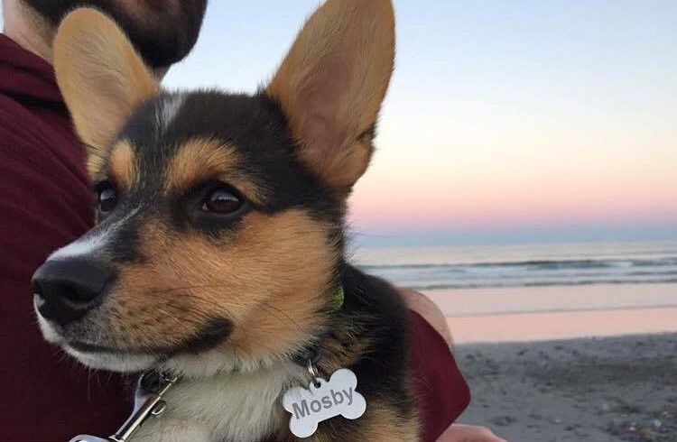

I got to sleep at the beach for 3 nights. I went with my family and I even got to meet some new family! Every morning and night I got to go for a walk on the beach and meet all kinds of other dogs. I liked getting my paws wet, but the waves made me nervous.
Some times I got really tired of walking so I would be carried by different family memebers. But if we are being honest, most of the time I didn't like to walk so I would sit and wait to be carried.